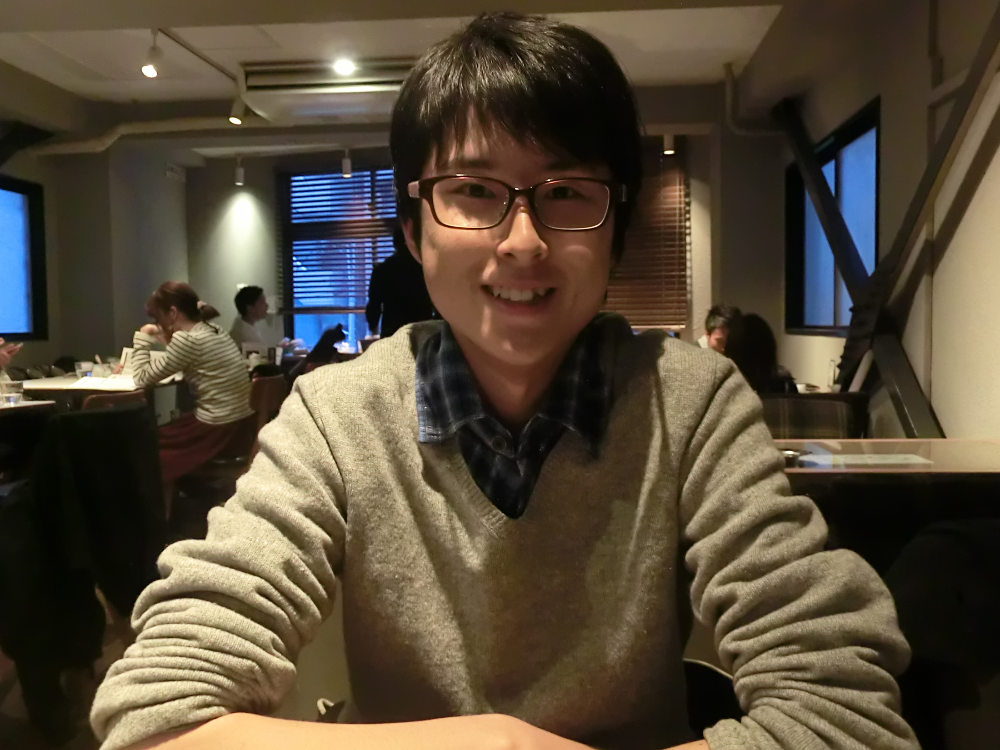
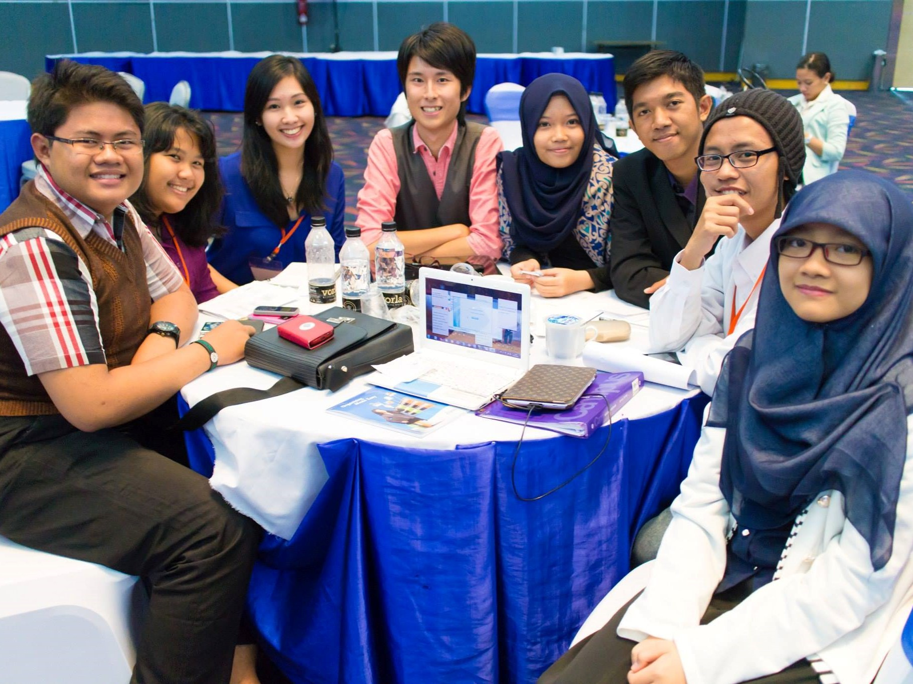

総合学術サークルCloud.A 参加者インタビュー
投票は本当に民主的か？
| 所属 | 早稲田大学 政治経済学部 |
|---|---|
| 専攻 | 社会選択論 |
政治経済学を勉強しています。その中でもゲーム理論や社会的選択理論と呼ばれる分野を専攻しています。これは集団の意思決定の方法について数理的に分析する分野で、具体的にはサークルの幹事長を決める方法から民主主義における選挙制度まで、個人の意見を集めて集団の意思決定を行うあらゆる場面について適用できる理論を勉強しています。
---例えばどのような理論がありますか？
例えば、A,B,Cの3人からなるグループにおいて、旅行先を決める場面を想像してみましょう。アメリカ、イギリス、フランスという候補があった際に、3人の行きたい旅行先が下記のように分かれていたとします。
| A | B | C | |
|---|---|---|---|
| 1位 | アメリカ | イギリス | フランス |
| 2位 | イギリス | フランス | アメリカ |
| 3位 | フランス | アメリカ | イギリス |
---はい。
さて、ここで今の投票結果を見比べてみましょう。この3人にとって、イギリスよりはアメリカが良いはずです。同様にアメリカよりはフランスが良いはずです。従ってイギリスよりフランスが良いはずですが、最後の投票ではフランスよりもイギリスが良いという結果が出ています。このように、我々が日常的に行っている意思決定の方法には矛盾を含んでいる可能性があるのです。
---なるほど。
これはあくまで単純な例ですが、例えば似たような問題が選挙制度などにあるとしたら、民主主義にとって大きな問題になります。このように、意思決定の方法に関わる矛盾や正統性について数学的に考える分野が社会的選択理論です。
---面白いですね！
はい、8月から半年間インドネシア大学に留学していました。そこでは主に開発経済学を勉強していましたが、英語やインドネシア語の勉強になったという側面が大きかったように感じます。英語とは別の「第二外国語」でコミュニケーションを取る経験が想像以上にエキサイティングでした。と言うのも、「英語で話す」ことは、今まで学校で習った文法や語彙などを使って「正しく話す」ことを意識しがちでしたが、インドネシア語は現地で慣れながら場当たり的に学んでいった部分があるので、新しい言語を学ぶことのダイナミックな感覚を得られました。また別の言語を新しく学ぶことになったとしても、抵抗なく前向きに学んでいけるようになったと思います。
---入学当初、留学に行きたいと言っている新入生は多くいますが、実際に留学に行く人は少ないようです。留学には何か、入学当初には見えづらいハードルがあるのでしょうか。
1つに、大学・学部の制度が挙げられると思います。留学に行くと4年で大学を卒業できなくなる可能性があったり、周囲の人より授業を多く履修しなければならなくなることがあります。そのようなハードルを下げてくれる制度を大学側が用意してくれているかどうかは1つの要因だと思います。ただ、大学を5年かけて卒業する人なども高校時代に想像していたよりは遥かに多く周囲にいるので、そこは躊躇しなくても大丈夫なのではないかと私は思います。ちなみに私は応募締め切りの2日前に留学のプログラムを知って考え始め、ノリと勢いで応募してしまったタイプですが、結果的に行って良かったと思っています。
第1回の「大学って何のためにあるの？」です。実はこの時、私は高校3年生でした。大学に入学する前に「そもそも大学で勉強するということは何なのか」について話したのですが、高校生だった自分にとって、実際に大学の先輩たちと話し合うことができたのは貴重な経験で、自分が興味のある分野をなぜ学ぶのかについて再確認することができました。また年齢や専攻に拘わらず様々な人とフラットに議論できるという形式も、他に無かったので印象的だったのだと思います。
久米郁夫『原因を推論する』と高根正昭『創造の方法学』です。この2冊は「科学的に物事を考えるとはどういうことか」について解説しているので、どんな専攻の人でも大学で勉強する上で欠かせない分野の知識だと思います。一度この内容を理解しておくと、今までどのように考えればよいか分からなかった問題について、自分で整理して考えることができるようになります。私も大学1年生の時に読んでおけば良かったと思っています（笑）。